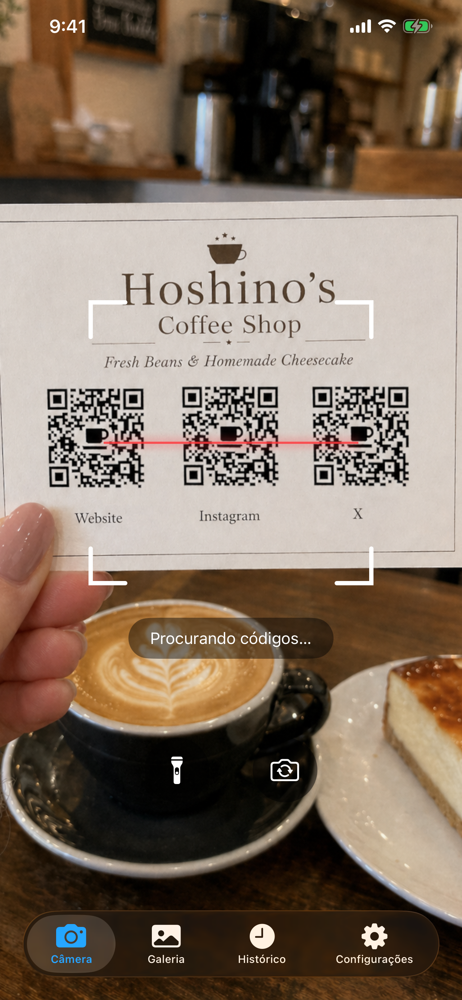
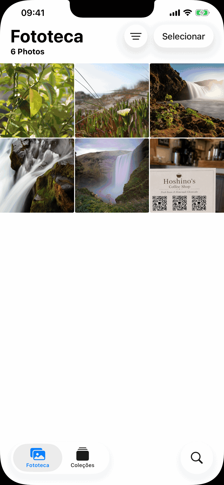
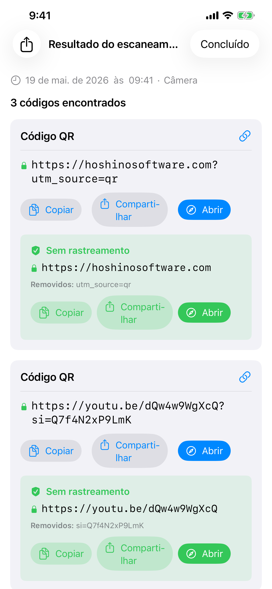
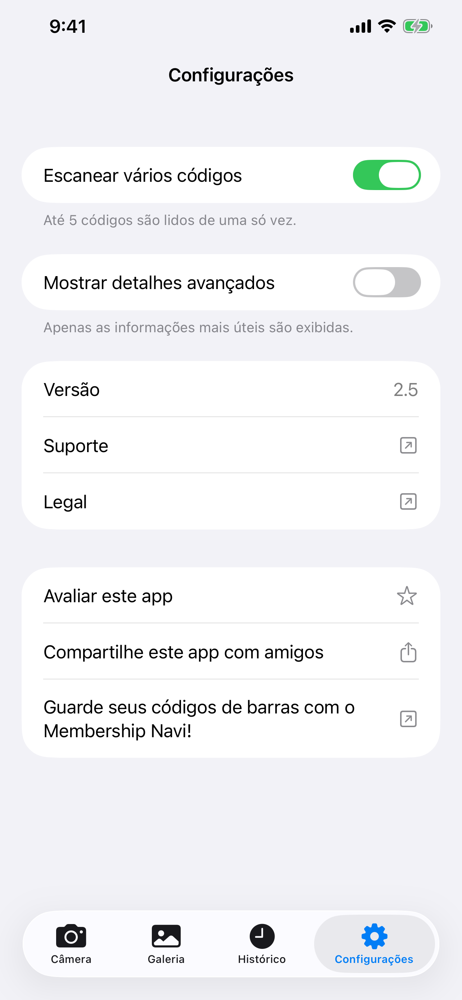

Leitor de Códigos
Leitor de Códigos escaneia códigos de barras e QR codes usando a câmera do seu iPhone ou qualquer imagem da sua biblioteca de fotos. Funciona totalmente offline, não armazena nada na nuvem e nunca exibe anúncios.
Download


Leitor de Códigos está disponível na App Store. Não é necessária conta. Requer iOS 18 ou posterior. Detalhes avançados, leitura multi-código, histórico longo e busca no histórico estão incluídos no app.
Suporte
Tem uma dúvida, encontrou um bug ou precisa de ajuda com o app? Entre em contato. Lemos cada mensagem.
Antes de escrever
Muitos problemas comuns estão respondidos no Manual e nas perguntas frequentes abaixo. Algumas verificações rápidas:
- Câmera não funciona? Vá em Ajustes do iPhone → Privacidade e Segurança → Câmera → ative o acesso para Leitor de Códigos.
- Não encontra o histórico? Toque na aba Histórico. Leitor de Códigos guarda até 10.000 leituras no seu dispositivo sem limite de tempo, e você pode buscar pelo conteúdo do código.
- O código não escaneia? Garanta boa iluminação e mantenha o código estável. Tente o modo Galeria se tiver um arquivo de imagem.
- O app trava? Force o encerramento e reabra. Se o problema persistir, envie um e-mail com o modelo do seu iPhone e a versão do iOS.
Perguntas Frequentes
- Precisa de conexão com a internet?
Não. Leitor de Códigos funciona completamente offline. - Coleta meus dados?
Não. Nada é enviado a lugar algum. O histórico de escaneamentos é armazenado apenas no seu dispositivo. - Acessa toda a minha biblioteca de fotos?
Não. Na aba Galeria, você escolhe uma única foto usando o seletor de fotos do sistema. Leitor de Códigos nunca recebe acesso à sua biblioteca. - A leitura parece lenta?
Confira em Ajustes se Ler vários códigos está ativado. A leitura multi-código espera brevemente para coletar até 5 códigos visíveis antes de mostrar os resultados. Se você geralmente lê um código por vez e quer a resposta mais rápida, desative-a. - Por que o modo multi-código demora um pouco mais?
O modo multi-código detecta até 5 códigos por vez. A câmera coleta códigos em uma janela curta de frames para garantir que captura todos os códigos visíveis antes de exibir o resultado. - Por quanto tempo o histórico é mantido?
Leitor de Códigos guarda até 10.000 leituras no seu dispositivo sem limite de tempo. A aba Histórico também inclui busca em texto completo no valor decodificado de cada código. - Por que não navega para um link automaticamente?
Isso é intencional. QR codes falsos ou maliciosos são comuns, encontrados em estacionamentos, mesas de restaurantes e outros lugares. Mostrar a URL antes de abri-la permite verificar se é segura.
Manual




Câmera
A aba Câmera abre e começa a escanear imediatamente. Aponte seu telefone para qualquer código de barras ou QR code e o app o detecta automaticamente. É necessária permissão para a câmera. Se você ainda não a concedeu, uma solicitação aparecerá. Toque em Abrir Ajustes e ative o acesso à Câmera para Leitor de Códigos.
- Lanterna: toque no botão de lanterna para iluminar ambientes escuros. Disponível apenas com a câmera traseira.
- Câmera frontal: toque no botão de rotação para alternar entre as câmeras traseira e frontal. Útil quando a câmera traseira não está disponível (por exemplo, danificada).
Galeria
A aba Galeria permite escanear códigos a partir de uma imagem existente. Toque em Escolher Foto para selecionar qualquer imagem da sua biblioteca. Apenas a foto específica que você escolher é compartilhada com o app. Leitor de Códigos não solicita acesso à sua biblioteca de fotos completa.
Após escolher uma foto, o app a escaneia e exibe o resultado imediatamente. Se nenhum código for encontrado, um alerta informará você.
Histórico
Cada escaneamento é salvo automaticamente na aba Histórico. Leitor de Códigos guarda até 10.000 leituras no seu dispositivo sem limite de tempo e inclui busca em texto completo.
- Ver um escaneamento anterior: toque em qualquer linha para reabrir o resultado completo.
- Excluir uma entrada: deslize para a esquerda em uma linha e toque em Excluir.
- Excluir tudo: toque no ícone de lixeira no canto superior direito.
- Rótulo de origem: cada entrada mostra se veio da Câmera, Galeria ou Compartilhamento.
- Buscar: digite qualquer texto na barra de busca e as entradas são filtradas conforme você digita, comparando o valor decodificado de cada código.
Ajustes
A aba Ajustes contém interruptores de recursos, seguidos por informações do app.
Ler vários códigos
Por padrão, Leitor de Códigos para assim que encontra um código. Ative Ler vários códigos para detectar até 5 códigos ao mesmo tempo, útil para cartões de visita, fichas de produto ou qualquer imagem com vários códigos lado a lado. A câmera continua lendo por um breve momento após a primeira detecção para coletar todos os códigos visíveis antes de mostrar os resultados.
Mostrar detalhes avançados
Ative Mostrar detalhes avançados para ver metadados técnicos junto de cada resultado de leitura: versão do QR, nível de correção de erro, padrão de máscara ou estrutura do código de barras (caracteres de início/fim, dígito verificador). Essas informações aparecem na página de resultado e nas linhas da aba Histórico.
Resultados do Escaneamento
Com Mostrar detalhes avançados ativado em Ajustes, duas seções adicionais aparecem na página de resultados:
- Dados Decodificados: a string bruta codificada dentro do código de barras, antes de qualquer análise.
- Estrutura: análise técnica do código de barras: caracteres de início/parada, dígito de verificação, padrões de guarda e elementos similares dependendo do tipo de código.
Para QR codes, chips de metadados também aparecem mostrando número de versão, nível de correção de erros e padrão de máscara.
Detecção de parâmetros de rastreamento
Quando uma URL contém parâmetros de rastreamento, Leitor de Códigos exibe um cartão verde Sem rastreamento abaixo dos dados brutos. O cartão mostra a URL limpa, uma linha Removidos: listando os parâmetros retirados (tags UTM e IDs de clique do Facebook, Google Ads, Microsoft, TikTok e muitos outros) e os botões Copiar / Compartilhar / Abrir, todos operando na URL limpa. Você acessa a mesma página sem ser rastreado.
Escanear de Outro App
Você pode escanear um código que aparece em uma foto dentro de qualquer outro app (uma mensagem, e-mail, visualizador de documentos ou navegador) sem sair desse app.
Usando Compartilhar:
- Abra a imagem na sua galeria ou em qualquer app e toque no botão Compartilhar.
- Na lista de apps que aparece, encontre e toque em Leitor de Códigos. Se não o vir, role até o final da lista e toque em Mais.
- O app abre e escaneia a imagem automaticamente.
Usando Ações:
- Abra a imagem na sua galeria ou em qualquer app e toque no botão Compartilhar.
- Role a linha de ações abaixo da lista de apps e toque em Scan for Codes.
- O app abre e escaneia a imagem automaticamente.
Widget da Tela Inicial
Você pode adicionar um widget à sua tela inicial como um atalho maior para o app. Tocá-lo abre a câmera diretamente, pronta para escanear. Os widgets vêm em três tamanhos (pequeno, médio, grande), para que você escolha o que melhor se encaixa no seu layout.
- Pressione e segure uma área vazia da tela inicial até os ícones começarem a tremer.
- Toque no botão + no canto superior esquerdo.
- Pesquise por Leitor de Códigos.
- Escolha um tamanho e toque em Adicionar Widget.
- Você pode redimensioná-lo depois pressionando e segurando o widget e escolhendo Editar Widget.
Control Center
O Control Center é o painel que desce quando você desliza de cima para baixo a partir do canto superior direito da tela. Você pode adicionar um botão de Leitor de Códigos para abrir a câmera com um único toque de qualquer lugar, incluindo a tela de bloqueio ou enquanto usa outro app.
- Deslize do canto superior direito para abrir o Control Center.
- Toque no botão + para entrar no modo de edição.
- Encontre Leitor de Códigos na lista e toque para adicionar.
- Você pode arrastá-lo para reposicioná-lo e redimensioná-lo no modo de edição.
Tipos de Código Suportados
| Código | Notas |
|---|---|
| QR Code | Código 2D mais comum. Usado para URLs, Wi-Fi, contatos e mais |
| Micro QR | Variante compacta do QR Code para etiquetas pequenas com espaço limitado |
| Aztec | Usado em cartões de embarque e bilhetes de transporte |
| Data Matrix | Comum em fabricação, saúde e logística |
| PDF417 | Usado em carteiras de motorista, cartões de embarque e etiquetas de envio |
| Micro PDF417 | PDF417 compacto para itens pequenos como embalagens farmacêuticas |
| EAN-8 | Código de barras curto para produtos pequenos |
| EAN-13 | Código de barras padrão encontrado na maioria dos produtos de consumo |
| UPC-E | Código de barras compacto usado em embalagens pequenas nos EUA/Canadá |
| Code 39 | Um dos códigos de barras mais antigos, comum em ambientes industriais |
| Code 93 | Sucessor de maior densidade do Code 39 |
| Code 128 | Código de barras de alta densidade amplamente usado em logística e transporte |
| ITF-14 | Código de barras de 14 dígitos impresso em caixas de papelão corrugado |
| Codabar | Usado em bibliotecas, bancos de sangue e algumas transportadoras |
| GS1 DataBar | Código de barras compacto para itens pequenos como frutas e alimentos frescos |
| GS1 DataBar Expanded | Variante estendida que carrega dados adicionais como peso e validade |
Não suportado:
| Código | Notas |
|---|---|
| EAN-2 / EAN-5 (complementos) | Suplementos curtos anexados ao EAN-13, usados para números de edição de revistas e preços de livros |
| rMQR | Micro QR Retangular, uma variante QR compacta mais recente para etiquetas estreitas |
| MaxiCode | Código de pontos 2D usado pela UPS em etiquetas de envio |
| SP Code | Código de barras de acessibilidade japonês que codifica dados de áudio falado |
| Códigos Postais | Códigos de barras postais de 4 estados usados por serviços postais nacionais (USPS, Royal Mail, Australia Post, Japan Post e outros) |
| Códigos proprietários | Códigos visuais personalizados que apenas o app emissor consegue escanear |
Códigos Demo
Escaneie-os diretamente desta tela com a câmera, ou tire uma captura de tela e use a aba Galeria.
 | QR Code URL com parâmetros de rastreamento https://hoshinosoftware.com?utm_source=review&utm_campaign=demo |
 | QR Code Rede Wi-Fi WIFI:S:example-wifi;T:WPA;P:example-password;; |
 | QR Code E-mail mailto:test@example.com |
 | QR Code Contato (vCard) BEGIN:VCARD VERSION:3.0 N:Last;First FN:First Last ORG:Company TITLE:Job Title ADR:;;Street;City;CA;90401;USA TEL;WORK;VOICE: TEL;CELL:+1234567890123 TEL;FAX: EMAIL;WORK;INTERNET:example@example.com URL:https://example.com END:VCARD |
 | Micro QR QR compacto para etiquetas pequenas HELLO |
 | Aztec (Full) Transporte / cartões de embarque AZTEC-DEMO-CODE |
 | Aztec (Compact) Variante compacta para etiquetas pequenas AZTEC-DEMO-CODE |
 | Data Matrix (Square) Fabricação / saúde DATAMATRIX |
 | Data Matrix (Rectangular) Variante retangular para etiquetas estreitas DATAMATRIX |
 | PDF417 Documentos de identidade / etiquetas de envio PDF417 SAMPLE DATA |
 | Micro PDF417 PDF417 compacto para itens pequenos MICROPDF417 SAMPLE DATA |
 | EAN-13 Código de barras de produto de varejo 5901234123457 |
 | UPC-E Código compacto de varejo (EUA/Canadá) 01234565 |
 | Code 128 Logística / envio CODE-128-DEMO |
 | ITF-14 Código de barras de caixa de envio 12345678901231 |
 | GS1 DataBar Código compacto para itens pequenos 0112345678901231 |
Legal
Política de Privacidade
Última atualização: maio de 2026
Compra na App Store
A compra do app é processada pela Apple através da App Store. Não recebemos seu Apple ID, método de pagamento ou qualquer informação pessoal sobre a compra. Além do que a própria Apple processa como parte da App Store, nenhum dado de compra sai do seu dispositivo.
Serviços de Terceiros
Leitor de Códigos não utiliza nenhum serviço de análise, publicidade ou rastreamento de terceiros. Nenhum dado é compartilhado com terceiros.
Privacidade de Crianças
Como nenhum dado pessoal é coletado, Leitor de Códigos é seguro para usuários de todas as idades e está em conformidade com a COPPA e regulamentações similares em todo o mundo.
Alterações nesta Política
Podemos atualizar esta Política de Privacidade periodicamente. As alterações entram em vigor imediatamente após a publicação. Recomendamos que você revise esta página regularmente.
Fale Conosco
Se tiver dúvidas sobre esta Política de Privacidade, entre em contato: support [at] hoshinosoftware [dot] com
Termos de Uso
Última atualização: abril de 2026
Aceitação dos Termos
Ao baixar ou usar Leitor de Códigos, você concorda em ficar vinculado a estes Termos de Uso. Se não concordar, por favor não use o app.
Licença
A Hoshino Software concede a você uma licença pessoal, intransferível e não exclusiva para usar Leitor de Códigos nos seus dispositivos Apple, de acordo com estes termos e os Termos de Serviço da App Store da Apple.
Uso Permitido
Você pode usar Leitor de Códigos apenas para fins lícitos. Você concorda em não usar o app de nenhuma forma que viole leis ou regulamentações aplicáveis.
Sem Garantia
Leitor de Códigos é fornecido "no estado em que se encontra", sem garantia de qualquer tipo, expressa ou implícita. Não garantimos que o app estará livre de erros, ininterrupto ou adequado a qualquer finalidade específica.
Limitação de Responsabilidade
Na máxima extensão permitida pela lei aplicável, a Hoshino Software não será responsável por danos diretos, indiretos, incidentais, especiais ou consequenciais decorrentes do uso ou da impossibilidade de uso de Leitor de Códigos.
Alterações nestes Termos
Podemos atualizar estes Termos de Uso periodicamente. O uso contínuo do app após a publicação das alterações constitui sua aceitação dos termos revisados.
Lei Aplicável
Estes termos são regidos pelas leis da jurisdição em que a Hoshino Software opera.
Fale Conosco
Se tiver dúvidas sobre estes Termos de Uso, entre em contato: support [at] hoshinosoftware [dot] com